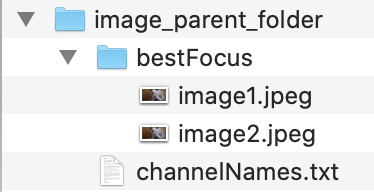

Setting Up CellSeg
This is a tutorial on how to set up and run CellSeg. This tutorial will cover:
- How to open the CellSeg program in terminal/Anaconda prompt
- How to organize your images before segmentation
- How to change parameters for segmentation in the cvconfig.py file
- Details of parameters for CellSeg
- How to run CellSeg to segment your data
This tutorial assumes you have completed the CellSeg installation tutorial here. This tutorial assumes no programming experience with Python or terminal.
Part 1: Opening the CellSeg program in Jupyter Notebook
First, we’re going to open the CellSeg program. Jupyter Notebook is a software that runs from an internet browser and provides a user-friendly way to view, edit, and run Python programs. First, in Anaconda prompt (Windows) or terminal (MacOS or Linux), navigate to the folder containing the CellSeg software as described in part 2 of the installation tutorial here, then activate your conda environment you had created for CellSeg in part 3 of the installation tutorial here by typing:
conda activate env_name
where you replace env_name with the name of your conda environment for CellSeg. To open CellSeg in Jupyter Notebook, next type:
jupyter notebook and hit enter.
Jupyter notebook should open automatically in your default browser. If it doesn’t open, copy the first URL underneath the line “Or copy and paste one of these URLs:” and paste it into your browser of choice. When Jupyter notebook opens in your browser, you should see this:

CellSeg is now set up, and we’re ready for our first run.
Part 2: How to organize your images before segmentation
For CellSeg to work properly, it requires the following folder structure for your images:
- 1. The images to segment are all in the same folder
- 2. This folder is contained in a parent folder
- 3. In the parent folder is a txt file containing the names of the image channels, one per line
An example of this structure is shown here:
Currently, CellSeg requires all images to have the same pixel dimensions in a given segmentation run. If you want to segment images of varying sizes, we recommend creating a folder for each image size, then having CellSeg segment the images in each folder one at a time (this folder structure is shown below).

CellSeg requires a txt file that contains names for each of the slices of your image (see below image). These names are usually the names of protein markers corresponding to each fluorescence channel and cycle. For RGB images, these channels are Red, Green, Blue (see below image). The txt file should be stored in the parent folder. Write down the absolute folder path to the parent folder. We’ll need it later.
Part 3: How to change parameters for segmentation in the cvconfig.py file
Starting from the jupyter notebook window for CellSeg described in part 1, click on cvconfig.py to open the parameter configuration file for CellSeg. Your window should look like this:
To change values in the cvconfig.py file, delete the text to the right of the equals sign and replace it with your own text. The parameters are divided into core and advanced parameters. The core parameters are necessary for basic segmentation runs. For more customizability, users can also modify the advanced parameters. Please pay careful attention to the cases and punctuation when editing parameters as small typos will prevent CellSeg from working properly. Proper formatting for each parameter, along parameter details, are described on the cvconfig.py page at the top and in this following section.
File input and output parameters
These parameters point CellSeg to where your image data is located on your computer and allow you to specify the output of the CellSeg program.
target: (string) this is the file path to the directory containing your image folder and channels txt file.
Example on MacOS: target = “/Users/MyMac/Downloads/Images_To_segm”
Example on Windows: target = “C:/Downloads/ImageData”
output_path_name: this is the name of directory to save output in, contained in double quotes. If directory does not exist, CellSeg creates directory. (default value is "output")
Example on MacOS: output_path_name = “/Users/Jacob Mac/Downloads/exp12_output”
Example on MacOS: output_path_name = “output” this will create an output folder in the CellSeg program folder and save the data there
Example on Windows: output_path_name = “C:/image_segmentations/exp12_output”
image_folder_name: (string) this is the name of the folder directly containing your images, contained in double quotes (default is "bestFocus")
Example 1: target = “bestFocus”
Example 2: target = “my_images”
Example of invalid input: target = bestFocus
image_channels_name : (string) name of the .txt file containing the name of your image channels (default is "channelNames.txt").
Example: target = “channelNames.txt”
Example of invalid input: target = “channelNames” (needs to include the .txt extension)
FILENAME_ENDS_TO_EXCLUDE : (string tuple) The suffixes of files in image_folder_name to exclude from segmentation. Format is each suffix contained in double quotes, separated by a comma, all contained within parentheses (see examples) (default is (montage.tif)).
Example 1: FILENAME_ENDS_TO_EXCLUDE = ("montage.tif") excludes only files ending in "montage.tif"
Example 2: FILENAME_ENDS_TO_EXCLUDE = () excludes no image files
Example 3: FILENAME_ENDS_TO_EXCLUDE = ("montage.tif", "merged.tif", ".png") excludes images ending in "montage.tif", "merged.tif", and all ".png" images
Example of invalid input: FILENAME_ENDS_TO_EXCLUDE = to exclude no file names, see Example 2.
IS_CODEX_OUTPUT : (True/False) CODEX output files have special filenames that allow outputs to contain more metadata about absolute positions, regs, and other things. Set this parameter to False if not using the CODEX filename convention, otherwise set it to True.
Example: IS_CODEX_OUTPUT = True
OUTPUT_METHOD : The desired format of the data output. Must be one of “imagej_text_file”, “statistics”, “visual_image_output”, “visual_overlay_output”, “all”. “all” will generate all four outputs for each segmented image. Output details:
-
"imagej_text_file"- not currently implemented -
"statistics"- this option outputs a csv file and fcs file each containing information for each identified cell including marker quantification, the (x,y) coordinate of the cell, and the size of the cell. -
"visual_image_output"- this option outputs a png image of the tissue with the cell boundaries overlaid on top. -
"visual_overlay_output"- this option outputs a tif image containing the cell boundaries as ROI regions which can be opened in programs such as ImageJ and used to do computations. -
"all"- this option outputs all four previous options for each segmented image.
Example 1: OUTPUT_METHOD = "all"
Example 2: OUTPUT_METHOD = "statistics"
Tutorial under construction...
Written by Jacob Bedia. Last edited on 4/18/21.